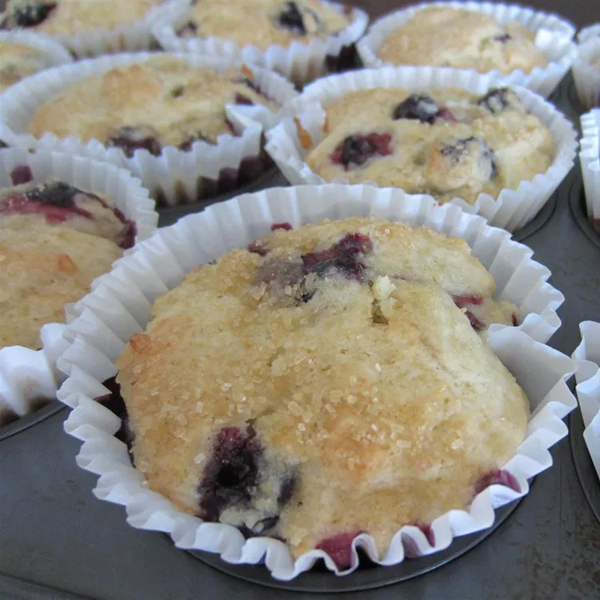

Ricotta-Blueberry Muffin

Description
This can also be made into 24 standard-sized muffins. Set a timer for 15 minutes and check frequently until done when baking.
Ingredients
- 1 cup white sugar
- ½ cup unsalted butter, at room temperature
- 1 tablespoon freshly grated lemon zest
- 1 cup whole milk ricotta cheese
- 1 large egg
- 1 tablespoon fresh lemon juice
- 1 teaspoon vanilla extract
- 2 cups all-purpose flour
- ½ teaspoon baking powder
- ½ teaspoon baking soda
- ½ teaspoon salt
- 2 cups fresh blueberries
- ¼ cup turbinado sugar (such as Sugar in the Raw®) (Optional)
Steps
- Preheat the oven to 350 degrees F (175 degrees C). Line a 12-cup muffin pan with extra-large paper cupcake liners.
- Beat white sugar, butter, and lemon zest together using an electric mixer in a mixing bowl until light and fluffy. Beat in ricotta cheese, followed by egg, lemon juice, and vanilla extract.
- Combine flour, baking powder, baking soda, and salt together in a separate bowl. Stir into butter mixture until just combined; batter will be thick. Carefully fold in blueberries.
- Divide batter evenly among the prepared muffin cups. Sprinkle 1 teaspoon of turbinado sugar over each muffin.
- Bake in the preheated oven until muffins are golden on top and a toothpick inserted into a muffin comes out mostly clean with some crumbs, 26 to 28 minutes. Remove muffins from the oven and carefully transfer to a wire rack to cool, 15 to
20 minutes.